A corpus study of Candil (Peña Flamenca de Jaén) and the Anglophone monthly Jaleo (San Diego), pairing a hybrid retrieval + LLM annotation pipeline with a 180-article human-gold sample and a 163-article LLM-comparison subset that bounds what the pipeline can yet support.
How do specialized flamenco periodicals — Candil, Jaleo, and their peers — construct flamenco legitimacy across Spanish and Anglophone contexts?
Each mode is anchored in a body of scholarship that frames the concept and supplies its diagnostic features. LEGIT is not a sixth mode: legitimacy is inferred from how the five families authorize, recognize, exclude, transmit, or evaluate flamenco.
Each mode names something a periodical does to flamenco — an act of authorization — not merely a topic it covers.
| Mode | Operation | Question it answers |
|---|---|---|
| AUTH | authenticates | Who or what is treated as genuine? |
| HERIT | patrimonializes | What is framed as inheritance? |
| COMM | binds community | Who belongs to the flamenco world? |
| PED | transmits knowledge | Who teaches, learns, or preserves technique? |
| CRIT | evaluates | Who has authority to judge? |
Candil writes from within an Andalusian flamenco institution; Jaleo writes from an Anglophone scene that must translate, teach, and authorize flamenco at a distance.
| Periodical | Place & language | Span | Issues | Articles | OCR'd pages |
|---|---|---|---|---|---|
| Candil HUMAN-GOLD · 90Peña Flamenca de Jaén · archive: PFJ, Biblioteca de Andalucía | Jaén · ES | 1979 – 1998 | 118 | 4 182 | 9 740 |
| Jaleo HUMAN-GOLD · 90 · LLM-COMPARISON · 73Jaleístas Inc., San Diego · archive: UCSD Special Collections | San Diego, USA · EN | 1977 – 1989 | 132 | 2 905 | 6 168 |
| Total · working corpus | 250 | 7 087 | 15 908 |
Entman-style frames as competing modes of legitimacy. Codes use family-prefixed IDs such as AUTH_03 and HERIT_11.
Each entry carries eight fields. The do-not-use-when clauses do the heaviest work — they name the collapse-risks between adjacent families.
The human-gold sample is 180 articles — 90 from Candil, 90 from Jaleo — drawn issue-stratified across the full span and coded by hand against the same codebook the pipeline uses. The LLM-comparison subset is 163 (90 Candil + 73 Jaleo): the articles that also have LLM output.
Reconciled to gold labels. Gold ↔ LLM precision/recall/F1 at family and code level is reported in §6.5 — and it is the reliability bound that decides how far every automated claim can travel.
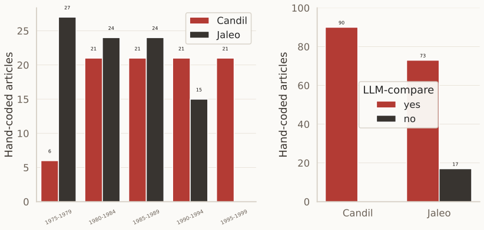
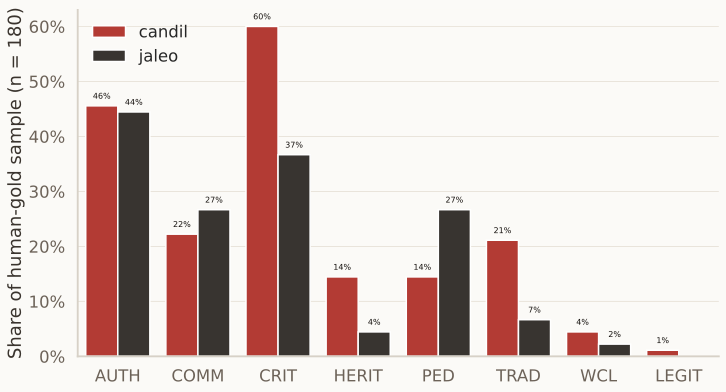
Criticism runs through both titles — but it authorizes different things. Interpretive, paraphrased readings, not quotations.
| Periodical | Typical items | Modes | Authority-work |
|---|---|---|---|
| Candil | review · opinión · homenaje · ensayo | CRIT + AUTH / HERIT | Establishes evaluative authority inside an Andalusian flamenco public. |
| Jaleo | review · community note · pedagogy item | CRIT + COMM / PED | Translates and teaches flamenco authority for an Anglophone scene. |
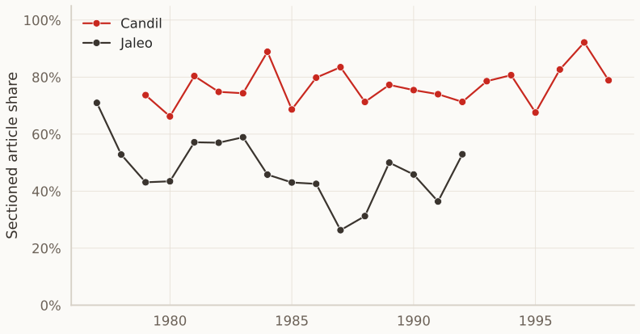
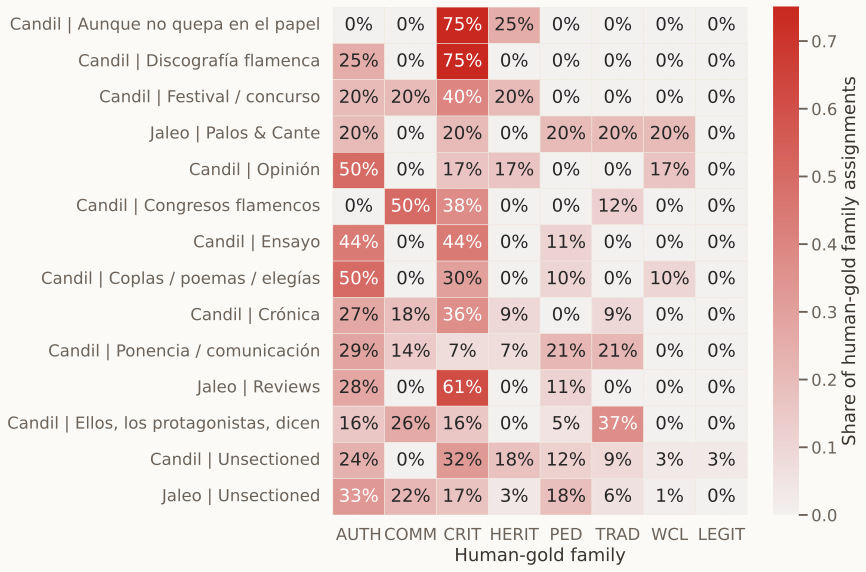
Everything so far is human-gold and structural. The automated layer is downstream of that work: first build the corpus and paratext structure, then code the gold sample, then use the LLM at scale, and finally bound it against the 163-article comparison subset.
gpt-4o-mini assigns code + span.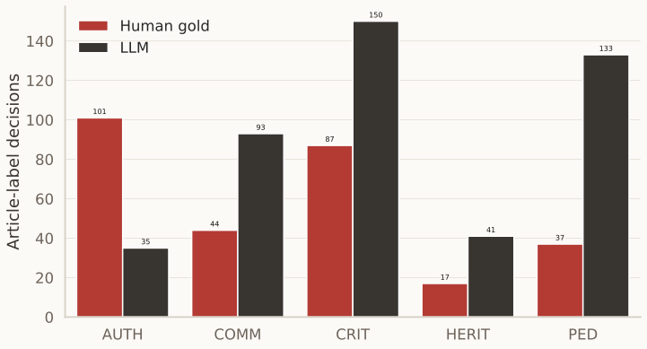
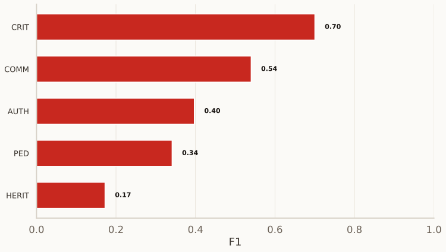
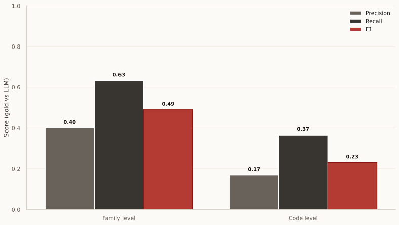
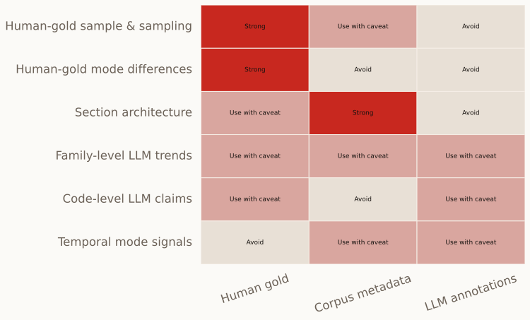
Each layer answers a different question and carries a different failure mode. The critical move is to keep them separated when making historical claims.
| Layer | What it contributes | Main limitation | Claim status |
|---|---|---|---|
| Archive + OCR corpus | Scale, chronology, periodical metadata, issue/article boundaries. | Survival, selection, OCR noise, and segmentation choices shape the corpus before coding begins. | Context |
| Paratext + sections | Corpus-wide evidence for editorial architecture and recurring rubrics. | Section detection is heuristic; Jaleo's looser sectioning is partly a historical feature and partly a detection challenge. | Strong, with detector caveat |
| Human-gold sample | Validated semantic labels for 180 articles and the central descriptive findings. | Small, stratified sample: balanced enough for comparison, too small for fine period/section estimates. | Main evidence |
| LLM annotation | Exploratory scale: candidate trends, failure diagnostics, rerun priorities. | Different label prior; AUTH/HERIT recall failures; code-level F1 = 0.23. | Bounded exploration |
The evidence supports claims about how two periodicals organized and authorized flamenco discourse. It does not directly measure performance practice, reception, or community life outside the page.
Bendix, R. (1997). In Search of Authenticity: The Formation of Folklore Studies. University of Wisconsin Press.
Casas-Mas, A., Pozo, J. I., & Montero, I. (2022). Oral tradition as context for learning music from 4E cognition compared with literacy cultures: Case studies of flamenco guitar apprenticeship. Frontiers in Psychology, 13, Article 733615.
Cruces Roldán, C. (2023). Flamenco heritage and the politics of identity. In M. Machin-Autenrieth et al. (Eds.), Music and the Making of Portugal and Spain (pp. 267–286). University of Illinois Press.
Entman, R. M. (1993). Framing: Toward clarification of a fractured paradigm. Journal of Communication, 43(4), 51–58.
Genette, G. (2001). Paratexts: Thresholds of Interpretation. Cambridge University Press.
Handler, R. & Linnekin, J. (1984). Tradition, genuine or spurious. Journal of American Folklore, 97(385), 273.
Kirshenblatt-Gimblett, B. (2014). Intangible heritage as metacultural production. Museum International, 66(1–4), 163–174.
Kunjar, S., et al. (2025). Computational frame analysis revisited: On LLMs for studying news coverage. arXiv.
Latham, S., & Scholes, R. (2006). The rise of periodical studies. PMLA, 121(2), 517–531.
Malefyt, T. de W. (1998). ‘Inside’ and ‘Outside’ Spanish flamenco. Anthropological Quarterly, 71(2), 63.
Pozo, J. I., Bautista, A., & Torrado, J. A. (2008). El aprendizaje y la enseñanza de la interpretación musical: cambiando las concepciones y las prácticas. Cultura y Educación, 20(1), 5–15.
Skare, R. (2020). Paratext. Knowledge Organization, 47(6), 511–519.
Smith, L. (2006). Uses of Heritage. Routledge.
Washabaugh, W. (1996). Flamenco: Passion, Politics and Popular Culture. Routledge.
Wieczorek, M. (2018). Flamenco: Współczesne dylematy badawcze. Łódzkie Studia Etnograficzne, 57, 75–92.
Backup figures held in reserve: one single-label mode view, one semantic substitution diagnostic, and four robustness checks kept outside the main talk.
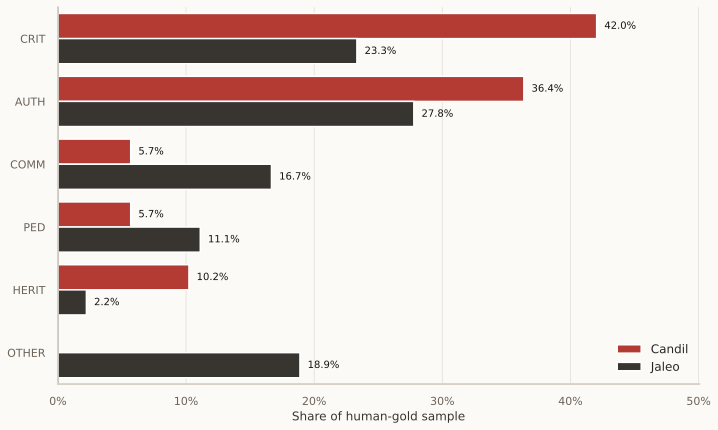
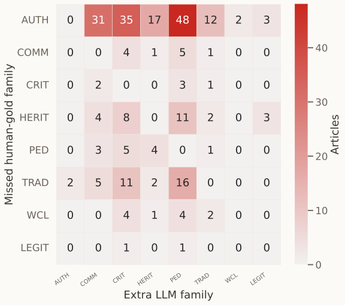
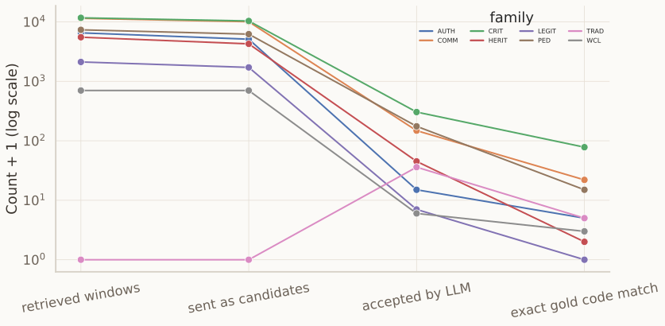
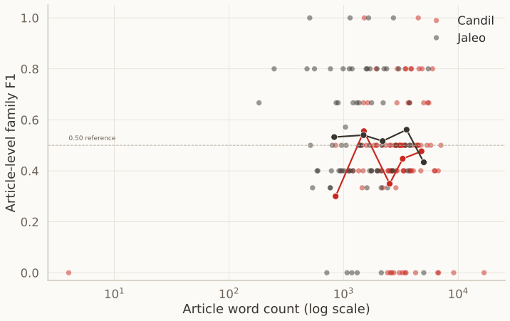
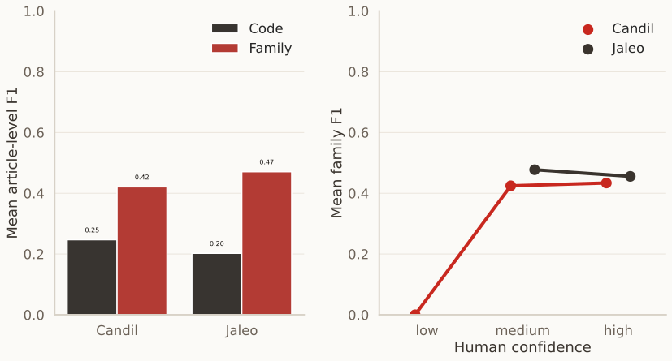
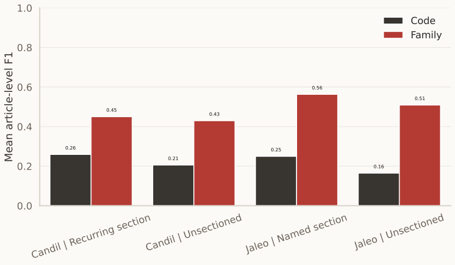